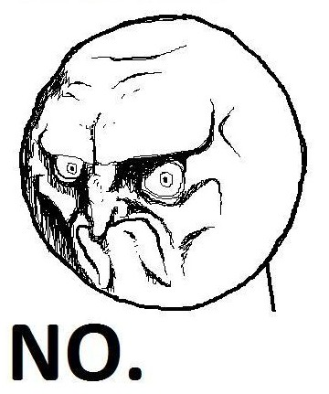

Lieve Sjoerdt
Door Koos en Floor
Dit ben jij

en dit..

en dit ook..
of dit..

En vanaf heden
27
Maar nog steeds een jonge god
En DEZE man
Oops..
Verkeerde Herman ^_^
Dus.. DEZE MAN..

- Is DE man
- Die dingen doet
- die niemand anders kan
En als je dit ziet..
Denk je daar zit een luchtje aan..

En als je dit ziet..
Denk je daar zit een luchtje aan..
Well, hello there
Dit..
is The Nose A.K.A. Richard Paterson
En dit..
Lees van onder naar boven
Mocht helaas niet baten
Issie weer
Kenje deze nog?
Dit jaar misschien?
Of misschien...
Kippengaas?

Dit was een leuk stukje
Dit is zelfs nog leuker
En dit is gordijn-ception
Dit is Floor (Ofwel, Floris)
Geile bikkelneet
Niet te verwarren met
Of met
En dit is Koos
Ook zeker niet te verwarren met..
Of met..
En zeker niet met..
Yep.. krimpkousen
Deze beste heren, en jij, houden van..

En dit
En dit
Of dit
En dit allemaal
Yes please!
m.u.v. Floris
NO please!
Deze man! :)
(: En deze man
Uiteraard dit
Zo'n unit als dit
Gaat niet samen met..
Deze madderfakkers
Sjoerdt met zijn nieuwe headset
Floris..
Totally Sjoerd met Nocturne
Totally Sjoerd met Nocturne
Totally Sjoerd met Nocturne